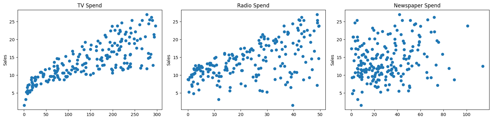
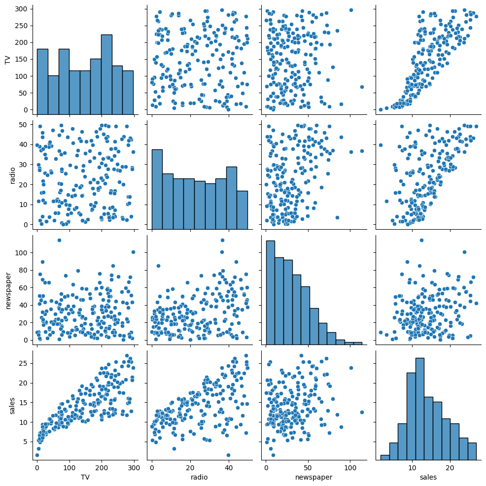
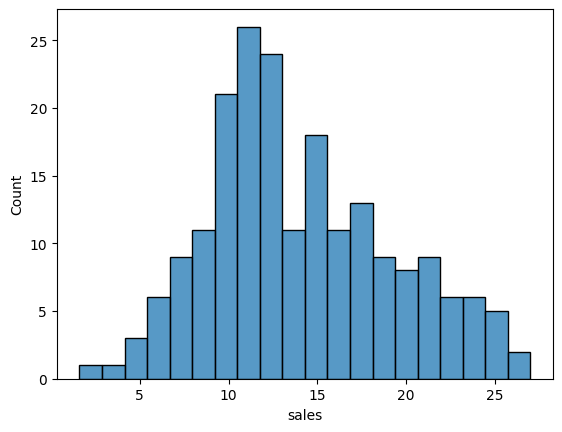
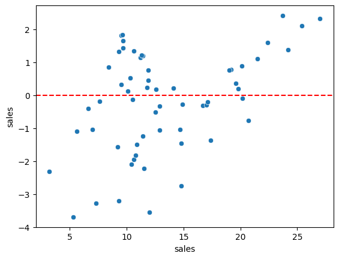
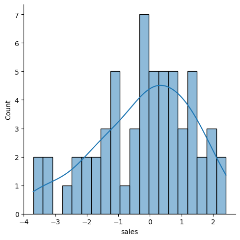
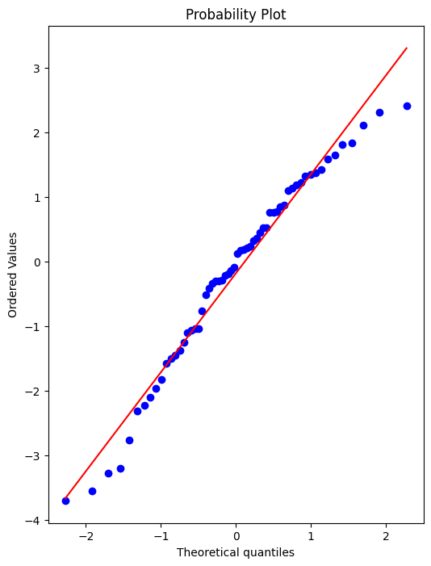
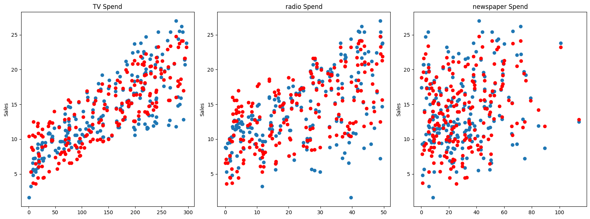

Code
import numpy as np
import pandas as pd
import matplotlib.pyplot as plt
import seaborn as snsimport numpy as np
import pandas as pd
import matplotlib.pyplot as plt
import seaborn as snsdf = pd.read_csv('Advertising.csv')df.head()| TV | radio | newspaper | sales | |
|---|---|---|---|---|
| 0 | 230.1 | 37.8 | 69.2 | 22.1 |
| 1 | 44.5 | 39.3 | 45.1 | 10.4 |
| 2 | 17.2 | 45.9 | 69.3 | 9.3 |
| 3 | 151.5 | 41.3 | 58.5 | 18.5 |
| 4 | 180.8 | 10.8 | 58.4 | 12.9 |
fig, axes = plt.subplots(nrows=1,ncols=3,figsize=(16,4))
axes[0].plot(df['TV'],df['sales'],'o')
axes[0].set_ylabel('Sales')
axes[0].set_title('TV Spend')
axes[1].plot(df['radio'],df['sales'],'o')
axes[1].set_ylabel('Sales')
axes[1].set_title('Radio Spend')
axes[2].plot(df['newspaper'],df['sales'],'o')
axes[2].set_ylabel('Sales')
axes[2].set_title('Newspaper Spend')
plt.tight_layout();
sns.pairplot(df)<seaborn.axisgrid.PairGrid at 0x7fcd52d27b20>
X = df.drop('sales',axis=1)X.head()| TV | radio | newspaper | |
|---|---|---|---|
| 0 | 230.1 | 37.8 | 69.2 |
| 1 | 44.5 | 39.3 | 45.1 |
| 2 | 17.2 | 45.9 | 69.3 |
| 3 | 151.5 | 41.3 | 58.5 |
| 4 | 180.8 | 10.8 | 58.4 |
y = df['sales']y.head()0 22.1
1 10.4
2 9.3
3 18.5
4 12.9
Name: sales, dtype: float64from sklearn.model_selection import train_test_split# help(train_test_split)X_train, X_test, y_train, y_test = train_test_split(X, y, test_size=0.3, random_state=101)len(df)200from sklearn.linear_model import LinearRegression# help(LinearRegression)model = LinearRegression()model.fit(X_train,y_train)LinearRegression()In a Jupyter environment, please rerun this cell to show the HTML representation or trust the notebook.
LinearRegression()
test_predictions = model.predict(X_test)from sklearn.metrics import mean_absolute_error,mean_squared_errordf['sales'].mean()14.0225sns.histplot(data=df,x='sales',bins=20)<Axes: xlabel='sales', ylabel='Count'>
mean_absolute_error(y_test,test_predictions)1.213745773614481# Root Mean Squared Error
# RMSE
np.sqrt(mean_squared_error(y_test,test_predictions))1.5161519375993882test_residuals = y_test - test_predictionssns.scatterplot(x=y_test,y=test_residuals)
plt.axhline(y=0,color='red',ls='--')<matplotlib.lines.Line2D at 0x7fcd7b534f10>
sns.displot(test_residuals,bins=20,kde=True)<seaborn.axisgrid.FacetGrid at 0x7fcd48d730d0>
import scipy as sp# Create a figure and axis to plot on
fig, ax = plt.subplots(figsize=(6,8),dpi=100)
# probplot return the raw value if needed
# we just want to see the plot, so we assign these values to _
_ = sp.stats.probplot(test_residuals,plot=ax)
final_model = LinearRegression()final_model.fit(X,y)LinearRegression()In a Jupyter environment, please rerun this cell to show the HTML representation or trust the notebook.
LinearRegression()
final_model.coef_array([ 0.04576465, 0.18853002, -0.00103749])X.head()| TV | radio | newspaper | |
|---|---|---|---|
| 0 | 230.1 | 37.8 | 69.2 |
| 1 | 44.5 | 39.3 | 45.1 |
| 2 | 17.2 | 45.9 | 69.3 |
| 3 | 151.5 | 41.3 | 58.5 |
| 4 | 180.8 | 10.8 | 58.4 |
y_hat = final_model.predict(X)fig,axes = plt.subplots(nrows=1,ncols=3,figsize=(16,6))
axes[0].plot(df['TV'],df['sales'],'o')
axes[0].plot(df['TV'],y_hat,'o',color='red')
axes[0].set_ylabel("Sales")
axes[0].set_title('TV Spend')
axes[1].plot(df['radio'],df['sales'],'o')
axes[1].plot(df['radio'],y_hat,'o',color='red')
axes[1].set_ylabel("Sales")
axes[1].set_title('radio Spend')
axes[2].plot(df['newspaper'],df['sales'],'o')
axes[2].plot(df['newspaper'],y_hat,'o',color='red')
axes[2].set_ylabel("Sales")
axes[2].set_title('newspaper Spend')
plt.tight_layout()
from joblib import dump,load# DUMP the MODEL
dump(final_model, 'final_sales_model.joblib')['final_sales_model.joblib']# LOAD the MODEL
loaded_model = load('final_sales_model.joblib')loaded_model.coef_array([ 0.04576465, 0.18853002, -0.00103749])X.shape(200, 3)#149 TV, 22 Radio, 12 Newspaper
# => Sales?
campaign = [[149,22,12]]loaded_model.predict(campaign)/home/mic/.pyenv/versions/jupyter_env/lib/python3.10/site-packages/sklearn/utils/validation.py:2739: UserWarning: X does not have valid feature names, but LinearRegression was fitted with feature names
warnings.warn(array([13.893032])# comment 2